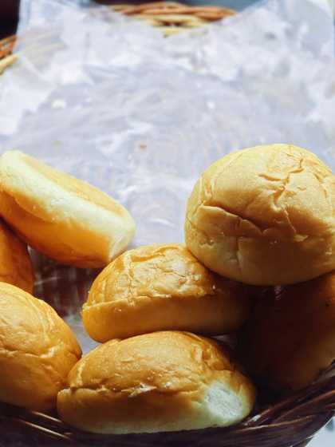
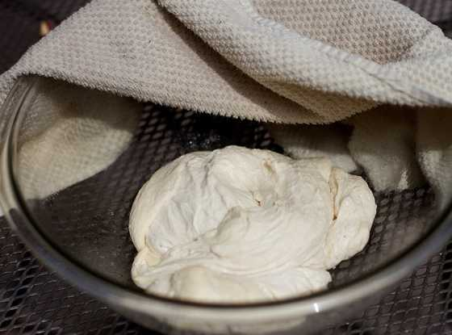
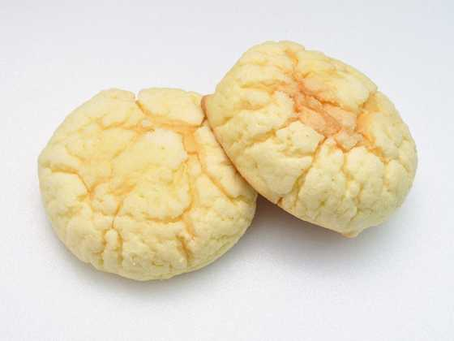
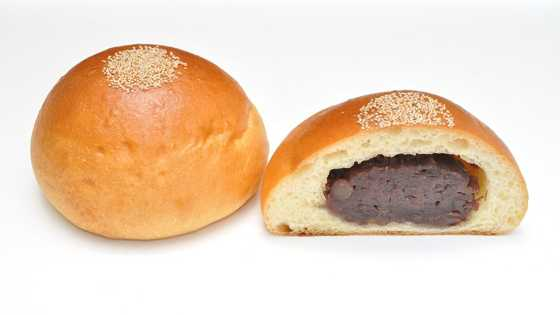
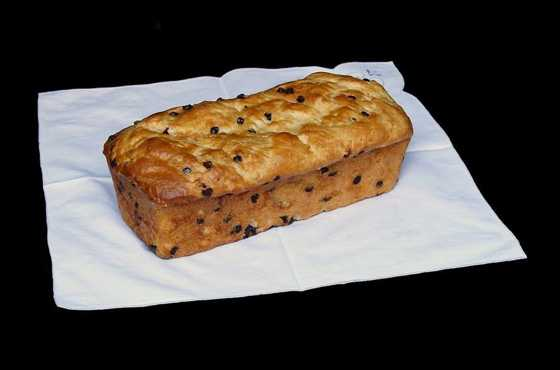
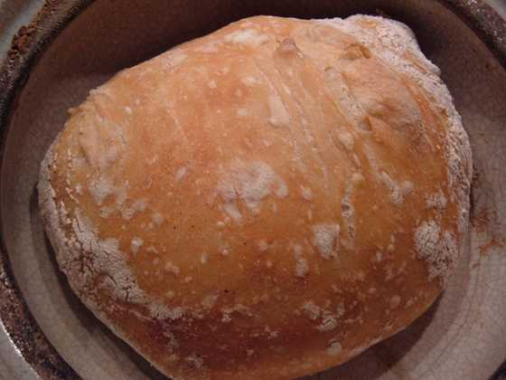
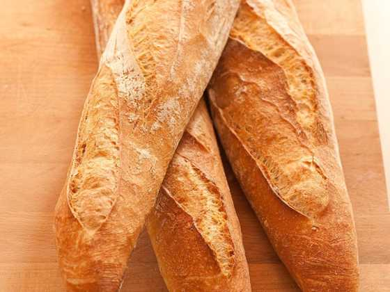
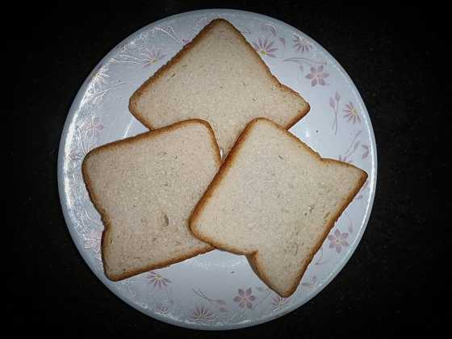
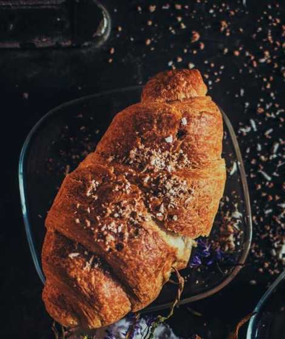

おやつの時間に、袋に入ったパンをいくつか選ぶのが楽しみです。
(イメージ例・30代)
千葉県成田市飯田町のパン屋
いろいろな色が並ぶパレットのように、ひとつずつ違うパンが並ぶお店。
NPO法人 成田・地域とともに歩む会かたつむり が運営するパン屋さんです。


「ベーカリーぱれっと」は、千葉県成田市飯田町にあるパン屋さんです。Instagramの公式アカウントでは、NPO法人成田・地域でともに歩む会かたつむりが運営するお店と紹介されています。
お店を紹介するブログでは、スタッフが小さなお子さま連れにもあたたかく接してくれることや、手に取りやすい価格が印象的だったと書かれています。国産小麦「もち姫」を使ったクリームパンのフェアなども開かれたようです。
店名「ぱれっと」の意味や、お店の始まりについて、確認できた情報はありません。このページの「絵の具のパレットのように」という表現は、制作側のイメージです。
紹介記事などで触れられている商品です。価格・販売状況は準備中(日によって異なる場合があります)。











掲載している写真はフリー素材のイメージです。実際の店舗・商品ではありません。他地域で撮影されたものや、撮影地が不明なものを含みます。
以下は制作側で作成したイメージ例であり、実在のお客様の声ではありません。
おやつの時間に、袋に入ったパンをいくつか選ぶのが楽しみです。
(イメージ例・30代)
子どもと一緒でも気兼ねなく立ち寄れる、あたたかい雰囲気のお店でした。
(イメージ例・40代)
おすすめを聞いたら、気さくに教えてもらえました。また寄りたいです。
(イメージ例・60代)

| 店名 | ベーカリーぱれっと |
|---|---|
| 住所 | 〒286-0041 千葉県成田市飯田町141-14 |
| 電話 | 準備中 |
| 営業時間・定休日 | 準備中(ご来店前にInstagramでご確認ください) |
| @bakery_pallet |